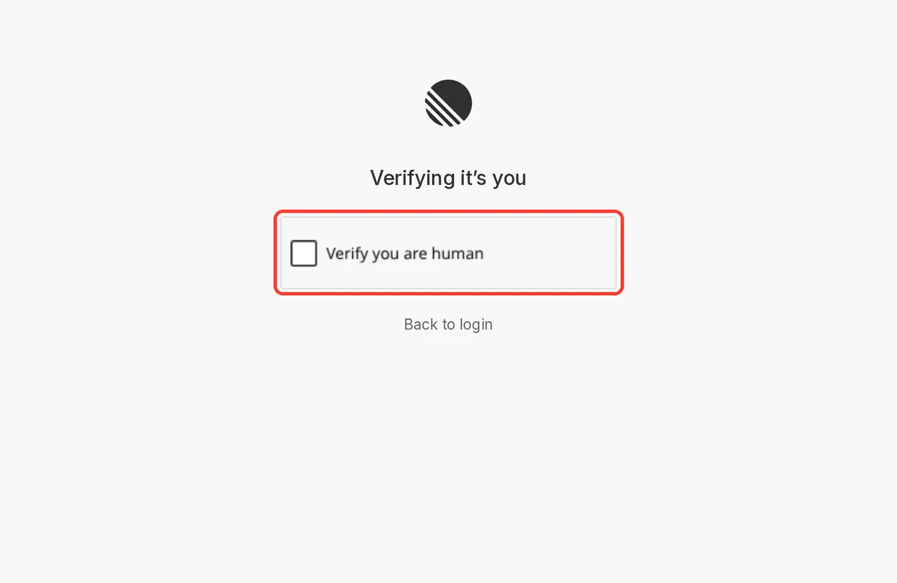
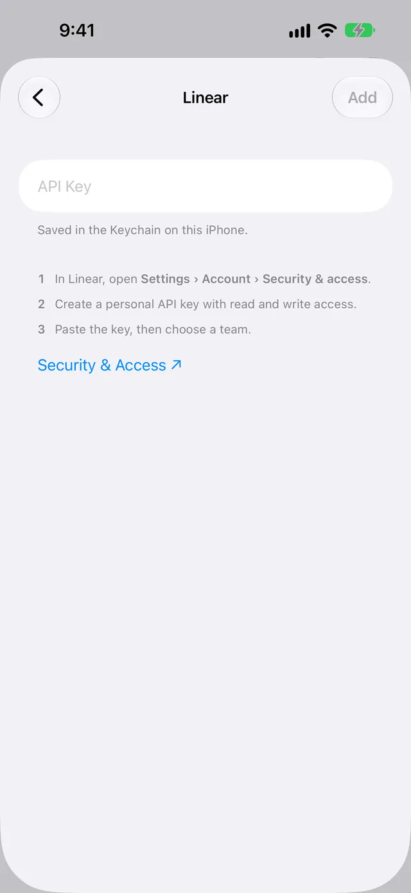

Send Apple Card transactions to Linear
WalletFeed sends your Apple Card, Apple Cash and Savings transactions from your iPhone to Linear. It makes one issue for each month, or one issue for each transaction. You make a personal API key in Linear, then paste it into WalletFeed.
Before you start
You must have these items:
- An iPhone with iOS 26 or a newer version. WalletFeed is available only in the US.
- WalletFeed, with access to your Wallet accounts.
- WalletFeed Pro, a subscription with a 1-week free trial, or a one-time Lifetime purchase. You must have WalletFeed Pro to send transactions to Linear.
- A Linear account. To make one, open Linear's sign-up page. You can use the Free plan of Linear.
Step 1: Make a personal API key in Linear
A personal API key is a code that lets WalletFeed make issues in your Linear workspace.
-
On your iPhone, open Linear's Security & Access settings. In WalletFeed, the Security & Access link on the Linear screen opens the same page.
-
If Linear shows its login page, log in with your email address or your Google account. Linear does not use passwords.
-
If Linear shows Verifying it’s you, tap the Verify you are human checkbox.

-
If you log in with your email address, open the email from Linear.
-
To log in, use the link or the code in the email.
-
If Linear shows a different page after you log in, open Linear's Security & Access settings again.
-
On the Security & Access page, find the API section.
-
In the API section, tap the button for a new personal API key.
-
If Linear shows a field for a name, type
WalletFeed. -
Give the key full access, or only Read and Write access. If you select only Create issues, WalletFeed cannot change or archive issues.
-
Optional: Give the key access to only the team that will receive the issues.
-
Tap the button that makes the key.
-
Copy the key. The key starts with
lin_api_. -
Keep this page open until you paste the key into WalletFeed.
Step 2: Add Linear in WalletFeed
-
Open WalletFeed.
-
Optional: If your workspace is on Linear's Free plan and you select Each Transaction in step 10, set Initial History to Today. Then the new destination receives no transactions from before today. Settings shows the Sync section only with WalletFeed Pro.
-
Tap Settings (the gear button) at the top of the screen.
-
In the Sync section, set Initial History to Today.

-
Tap Done.
-
-
Tap Destinations.
-
Tap +.

-
Under Sheets & Databases, tap Linear. You can also type
Linearin the search field. -
If WalletFeed shows the WalletFeed Pro screen, get WalletFeed Pro on that screen. Then the Linear screen opens.
-
Paste the key into the API Key field. WalletFeed keeps the key in the Keychain on your iPhone.

-
After WalletFeed reads the key, select a team in Team. This team receives the issues.
-
Optional: In Project, select a project. If you do not select a project, Project stays at None. A project must be in Linear before WalletFeed can show it.
-
In Send, select Monthly or Each Transaction.
With Monthly, each month becomes one issue, with a table of its transactions. Monthly is the default.
With Each Transaction, each transaction becomes one issue.
-
Tap Add.
-
Read the message Send Transactions to Linear? It tells you the fields that Linear receives. It also gives the accounts and the start date of the transactions.
-
Tap Send. If you tap Cancel, WalletFeed does not add the destination.
Destinations then shows the new destination with the name of the team, for example “Linear · Finance”.
Step 3: Set a filter
With a filter, WalletFeed sends only some transactions to Linear. If Send is Each Transaction and your workspace is on Linear's Free plan, set a filter.
-
In Destinations, tap the Linear destination.
-
Set the Filter switch to on.

-
Optional: Set Include to Purchases. Then Linear receives no refunds or payments.
-
Optional: In Minimum, type an amount, for example
25. Then Linear receives only transactions of $25 or more. -
Optional: In Accounts or Categories, select only the accounts or categories to send to Linear.
-
Optional: To send previous transactions with this filter, tap Send History. Refer to Send previous transactions.
Data that Linear receives
Your transactions go from your iPhone directly to Linear. WalletFeed has no account and no WalletFeed servers. After Linear receives your transactions, Linear's terms are applicable to them.
WalletFeed puts each issue in the team that you selected, and in the project if you selected one. If Triage is on for the team, a new issue goes to Triage. If Triage is off, the issue goes to the first Backlog status of the team.
Monthly
Each month becomes one issue. The title has the accounts of the transactions and the month, for example Apple Card transactions, October 2026.
The description starts with the number of transactions and their total, for example 42 transactions · Total $1,234.56. Then it has a table of the transactions of the month, newest first. The table has these columns:
- Date
- Merchant, with
· Pendingafter the merchant until the charge posts - Amount, with + before the amount of a refund or a payment
- Category
- Account, only if the month has transactions from more than one Wallet account
The last line of the description starts with WalletFeed ID:. WalletFeed uses this line and an attachment with the title WalletFeed to find the issue again.
If a month has more than approximately 400 transactions, the table shows only the newest transactions. Then the description shows, for example, “Showing the newest 412 of 530 transactions. The count and total include all of them.”
Each Transaction
Each transaction becomes one issue. The title of the issue has the amount and the merchant, for example $6.75 · Blue Bottle Coffee. The description of the issue is a table with these rows:
| Row in the description | Value from Wallet |
|---|---|
| Date | The date of the transaction, for example 2026-10-29 |
| Merchant | The merchant name, or the description if Wallet has no merchant name |
| Amount | Less than zero for a charge, for example -84.12, and more than zero for a refund or a payment |
| Currency | The currency code, for example USD |
| Category | The WalletFeed category, for example Groceries |
| Status | The Wallet status, for example pending, or booked after the charge posts |
| Pending | Yes or No |
| Account | The Wallet account, for example Apple Card |
| Description | The description from Wallet |
| Type | The type of transaction, for example pointOfSale or refund |
| MCC | The merchant category code, for example 5411 |
| Foreign Amount and Foreign Currency | The amount and the currency of a charge in a different currency |
| WalletFeed ID | The transaction ID, in the last row |
WalletFeed does not write a row that has no value. In the description, an amount has no zeros at the end, for example -23.4 for $23.40.
Each issue also has an attachment with the title WalletFeed. WalletFeed uses this attachment and the WalletFeed ID row to find the issue again.
Sync times and changes
While WalletFeed is open, Linear receives changes in seconds. When WalletFeed is closed, iOS starts WalletFeed in approximately 1 hour or less after a change in Wallet. For this, Background Sync must be on.
Background Sync is in Settings › Sync, and it is on until you set it to off. After your iPhone starts again, WalletFeed sends nothing to Linear until you type your iPhone passcode one time.
Monthly
The first transaction of a month makes the issue of that month. After that, each change in the month changes the title and the description of the same issue. For example, a new transaction, a pending charge that posts and a declined charge all change the issue.
If no transactions stay in a month, for example after a declined charge, the issue of the month stays. Its description then shows “No transactions.”
Each Transaction
A pending charge becomes an issue with · Pending at the end of the title. When the charge posts, WalletFeed changes the title and the description of the same issue.
A refund becomes a different issue from the charge. The title of a refund or a payment has + before the amount, for example +$49.00 · Apple Store.
If the bank rejects a pending charge, or Wallet removes a transaction, WalletFeed archives the issue. The archived issue stays in Linear.
Changes that you make in Linear
When a transaction changes, WalletFeed writes the title and the description of its issue again. If you changed them in Linear, WalletFeed replaces your changes. WalletFeed does not change the status or the assignee of the issue.
Send previous transactions
A new Linear destination also receives previous transactions, from the start date in Settings › Sync › Initial History. Initial History is All until you change it.
With Each Transaction, a Linear destination receives a maximum of 30 days of previous transactions. With Monthly, there is no limit of 30 days. The start date moves back to the first day of its month, and each previous month becomes one issue. WalletFeed sends the newest month first.
To send transactions from a longer period, use Send History:
-
In Destinations, tap the Linear destination.
-
Tap Send History.
-
Select a period: 30 Days, 90 Days, 1 Year or All.
-
Read the message Send History to Linear?
With Monthly, the message shows “Each month becomes one issue.” With Each Transaction, it shows “Each transaction can become an issue.”
-
Tap Send.
WalletFeed sends the newest transactions first, and the destination screen shows the number of transactions that WalletFeed sent. Send History also uses the filter. With Monthly, the period starts on the first day of its month.
One year can have more than 250 transactions. If Send is Each Transaction and your workspace is on Linear's Free plan, set a filter before you use Send History.
To stop Send History:
- On the destination screen, tap Send History.
- Tap Stop Sending. The issues that WalletFeed sent stay in Linear.
Change or delete the destination
To change the transactions that go to Linear, change the Filter settings on the destination screen.
The destination screen shows the Team and the Project, but you cannot change them. To use a different team or project, add Linear again with the new team and project. Then delete the previous Linear destination.
To change what becomes an issue, select Monthly or Each Transaction in Send on the destination screen. With Monthly, the issue of a month then shows all the transactions of the month. These include the transactions that have an issue from Each Transaction. With Each Transaction, each new transaction becomes an issue, and the month issues stay. With Each Transaction and no filter, you can tap Turn On Filter below Send.
To stop the destination temporarily, set the Enabled switch to off.
To replace the key, for example after you revoke it in Linear:
- In Linear, make a new personal API key, as in Step 1.
- In WalletFeed, tap the Linear destination in Destinations.
- Tap Replace Key.
- Paste the new key into API Key.
- Tap Replace. Before WalletFeed keeps the new key, it makes sure that the key can get access to the team.
To delete the destination:
- In WalletFeed, tap the Linear destination in Destinations.
- Tap Delete.
- In the message, tap Delete. The issues that WalletFeed sent stay in Linear.
- Optional: In Linear, revoke the key in Settings › Account › Security & Access.
If there is a problem
If WalletFeed shows “Key rejected”
Linear did not accept the key because the key is not correct, or because a person revoked it in Linear.
- In Linear, make a new personal API key, as in Step 1.
- If WalletFeed shows the message on the Linear screen, paste the new key into the API Key field.
- If WalletFeed shows the message on the destination screen, replace the key, as in Change or delete the destination.
If the destination shows “Authentication failed”
Linear did not accept the key, or the key cannot make or change issues in the team.
- In Linear, make a new personal API key with full access, or with Read and Write.
- In WalletFeed, tap the Linear destination in Destinations.
- Tap Replace Key.
- Paste the new key into API Key.
- Tap Replace.
If WalletFeed shows “Give the key Read and Write access”
Linear does not let the key get access to the team.
- In Linear, make a new personal API key with full access, or with Read and Write.
- If you give the key access to only some teams, include the team that you use with WalletFeed.
- If WalletFeed shows the message on the Linear screen, paste the new key into the API Key field.
- If WalletFeed shows the message on the destination screen, replace the key, as in Change or delete the destination.
If WalletFeed shows “This key can't see any teams”
The key has access to no team in Linear.
- In Linear, make a new personal API key with access to your team.
- Paste the new key into the API Key field.
If WalletFeed shows “Linear is limiting requests”
Linear has a limit for each user in each hour, and you are at that limit.
- Wait for one minute.
- If WalletFeed shows the message on the Linear screen, tap Try Again.
- If WalletFeed shows the message on the destination screen, replace the key again, as in Change or delete the destination.
If new transactions do not become issues
On Linear's Free plan, a workspace with more than 250 issues cannot get new issues.
- To make fewer issues, set Send to Monthly on the destination screen. Then each month becomes one issue.
- To send all your transactions to Linear, change your workspace to a different Linear plan, for example Basic. Basic has no limit on issues.
- To send only some transactions, set a filter, as in Step 3.
If one transaction has two issues
With Each Transaction, WalletFeed finds an issue in the team that you selected by its WalletFeed ID row and its WalletFeed attachment. If a person removes the row and the attachment, or moves the issue to a different team, WalletFeed makes a new issue.
- In Linear, archive or delete the issue that has no WalletFeed ID row, or the issue in the different team. WalletFeed continues to change the other issue.
- Keep the WalletFeed ID row and the WalletFeed attachment in each issue.
If Linear receives changes only while WalletFeed is open
Background Sync is off, or your iPhone started again and you did not type its passcode.
- In WalletFeed, tap Settings (the gear button) at the top of the screen.
- In the Sync section, set the Background Sync switch to on.
- Tap Done.
- After your iPhone starts again, type its passcode one time.
If Linear does not let you make an API key
An admin of your Linear workspace does not let members make API keys. Admins can always make API keys. On the Free plan, all users are admins.
- Tell an admin of the workspace to change Member API keys in Settings › Administration › API.
- After the admin changes Member API keys, make the key, as in Step 1.
Related
Updated October 30, 2026